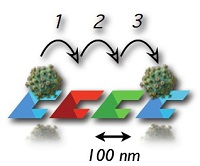
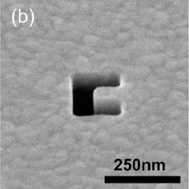
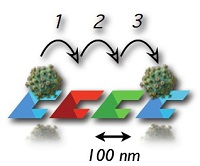
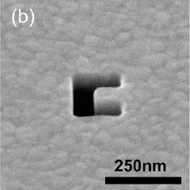

Nano-optical conveyor belt
Researchers: Yuxin Zheng, Jason D. Ryan, Paul C. Hansen, Asif Zaman, Tiffany W. Huang
The "nano-optical conveyor belt" can capture, manipulate, interrogate and sort nanoscale particles at the chip-scale using optical gradient forces. By concentrating light with metal nanostructures we obviate the need for tightly-focused laser beams to obtain high gradient forces; furthermore by exploiting the polarization and wavelength-selectivity of nanoapertures we propel nanoparticles in chosen directions without need for beam-steering or translation stages. We envision applications for concentrating, filtering, and organizing particles into patterns; performing Raman spectroscopy; nanomanufacturing; and schemes for sub-micron scale pumps and other devices. The conveyor belt is inherently a platform technology; we hope it will be as widely-used in nanoscience as microfluidics.
References:
[4] P. Hansen, Y. Zheng, J. Ryan, L. Hesselink, "Nano-Optical Conveyor Belt, Part I: Theory," Nano Lett. 14(6), 2965-2970 (2014) [Link]
[5] Y. Zheng, J. Ryan, P. Hansen, Y. T. Cheng, T. J. Lu, L. Hesselink, "Nano-Optical Conveyor Belt, Part II: Demonstration of Handoff," Nano. Lett. 14(6), 2971-2976 (2014) [Link]
Researchers: Max Yuen, Yao-te Cheng, George Herring
X-ray differential phase contrast imaging and PeXSA
Traditional X-ray imaging systems have based on the absorption of material. Unlike such absorption-based X-ray imaging system, recently, the grating based Talbot-Lau interferometer employing a low brilliance and incoherent X-ray source is widely adopted in medical imaging. This implementation is attractive because it does not require a coherent X-ray source nor long propagation distance. The X-ray differential phase contrast imaging system is a three-grating X-ray DPC system, and its optimum design is relatively insensitive to the source spectrum. High energy and wide field of view applications eventually require grating-less sources and detectors.
References:
[1] "Design of X-ray Differential Phase Contrast Imaging System for High Energy and Wide Spectrum X-ray Applications," CLEO 2014. [Link]
FDTD/ Adjoint FDTD
Researchers: Paul C. Hansen
Development of computational methods for design sensitivity analysis and automated optimization of nanophotonic and plasmonic devices using adjoint finite-difference time-domain solutions to Maxwell's equations. The rapid multiplication of innovative structures has been supported by powerful and accurate numerical methods such as finite-difference (FDTD, FDFD), finite element FEFD, FETD, CFEM...),and coupled wave analysis (RCWA). However, calculating the sensitivity of a design to a structural change using any of these methods requires one extra simulation for each perturbed system parameter. By combining an ordinary full-wave FDTD simulation with an adjoint FDTD solution, one can obtain the sensitivity of a device's performance to any number of design parameters at the cost of a few dot products between fields. This can speed up gradient-based optimization of devices by orders of magnitude.
References:
[1] Paul Hansen, Lambertus Hesselink, and Brian Leen "Design of a subwavelength bent C-aperture waveguide" Optics Letters, Vol. 32, Issue 12, pp. 1737-1739 (2007) [ Link ]
[2] Paul C. Hansen, Yuxin Zheng, Eugene perederey, and Lambertus Hesselink "Adjoint FDTD for Nanophotonic Optimization" poster session, CLEO, Baltimore, MD (2011)
C-Aperture/C-aperture Nano-tip near-field optics
Researchers: Yao-Te Cheng, Yin Yuen, Yuzuru Takashima
The use of extremely efficient nano-sized apertures (less than 100 nm in size) for near field optical applications such as ultra-dense optical data storage using Very Small Aperture Lasers in conjunction with magneto-optic or phase change media for ultra-high density data storage. We found that a single C-shaped aperture has a photon throughput 1000 times larger than round or square apertures, while producing the same nano-sized spots approximately one spot diameter away from the aperture surface. This new way of creating extremely bright nanometer sized spots is expected to greatly enhance the performance of near-field optical probe scanning devices, scanning spot lithography, optical and optically assisted magnetic data storage and nano-biology and chemistry devices and experiments. We are focusing our efforts on understanding the detailed physical processes involved through exact modeling of the interaction between electro-magnetic waves and matter, as well as experimental studies of practical applications.
References:
[1] J. Brian Leen, Paul Hansen, Yao-Te Cheng, Aaron Gibby, and L. Hesselink "Near-field optical data storage using C-apertures" Appl. Phys. Lett. 97, 073111 (2010) [ Link ]
[2] Yao-Te Cheng, Yuzuru Takashima, Yin Yuen, Paul C. Hansen, J. Brian Leen, and Lambertus Hesselink "Ultra-high resolution resonant C-shaped aperture nano-tip" Opt. Express, Vol. 16, No. 6, 5077 (2011) [ Link ]
[3] Yao-Te Cheng, Yuzuru Takashima, Juan R. Maldonado, Larry Scipioni, David Ferranti, Piero A. Pianetta, Lambertus Hesselink, and R. Fabian Pease "Sub-15 nm Photo-electron Source Using a Nano-aperture Integrated with a Nano-antenna" Poster session, CLEO, Baltimore, MD (2011)
Thermoacoustic engines: physics and deployment as CHP
Researchers: Jeffrey Lin
Modern electricity generation and transmission can be inefficient in its centralization. An alternative is distributed combined heat and power (CHP), in which local heat sources generate dispatchable electricity and reuse excess heat.
Inexpensive energy conversion technologies would enable widespread micro-CHP, and the thermoacoustic engine provides a simple, low-cost design with high thermal-to-electric efficiency over many fuels.
We focus on both the physics of thermoacoustics and its applications: developing 3-D Navier-Stokes computational design tools for energy generation and extraction, experimental work as validation, and grid modeling to determine the integration benefits of a distributed CHP system.
References:
[1] C. Scalo, J. Lin, S. K. Lele, and L. Hesselink, “Towards full-scale numerical simulations of a traveling-wave thermoacoustic Stirling heat engine,” in 43rd AIAA Fluid Dynamics Conference, 2013, vol. 3208.
 


